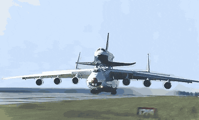

Welcome one and all to my presentation!
Today we will be discussing a subject, and industry and a history that I deeply passionate about and this is the world of Aviation! Ever since I was a wee lad I have always had a deep passion for those giant metal tubes I'd see in the sky, as I grew older my passion only grew stronger to the point where I can call myself a professional "Avgeek".
Fun example of an Antonov 225 carrying a Buran space shuttle.
This presentation will be broken into 6 different sections.
We will visiting the History of Aviation, to the advent of Inter War Era aviation such as the Hindenburg. We will then cross over in WW2 aviation and how it contributed to the Jet Age. And we cannot have a discussion on aviation without discussing ROCKETS!
Links: